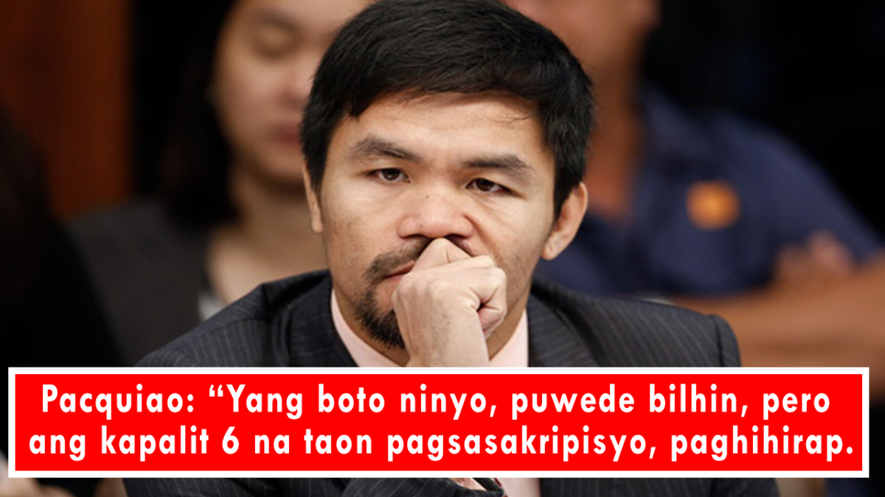

‘6 na taon ng paghihirap’: Pacquiao says selling votes will cost country its future
ABS-CBN News | Posted at Oct 27 2021 05:33 AM
World champion boxer and senator Manny Pacquiao on Tuesday said those who sell their votes put their future at risk ,adding that he believes people will make the right choice come the 2022 elections.
" 'Yang boto ninyo, puwede 'yang bilhin ng P1,000, P2,000, pero ang kapalit niyan is 6 na taon pagsasakripisyo, 6 na taon ng paghihirap," the presidential candidate said.
(Your votes can be bought for a P1,000, P2,000, but you'll get 6 years of sacrifices, 6 years of hardships in exchange.)
"Ano bang kinabukasan mo sa loob ng 6 na taon? 'Yun 'yun. Bawat boto mo mahalaga. 'Wag ninyong ibenta 'yung boto ninyo. Pagdating sa pamumuno dito sa bansa natin, 'wag na 'wag niyo ibenta 'yang boto ninyo."
(What will be our future in the next 6 years? That's what you need to think about. Every vote counts. So don't sell your votes. When it comes to governance, you shouldn't sell your votes.)
"Alam ko matalino ang taong-bayan. Matalino kayong pumili. Alalahanin ninyo ang isang boto natin, isang boto ng bawat Pilipino, kinabukasan sa buong 6 na taon."
(I know Filipinos are smart, that you will choose wisely. Remember that how the next 6 years play out depends on every vote, each Filipino's vote.)
Meanwhile, Pacquiao said he will also work toward amending the substitution rule in the elections, because it has been abused.
"'Yang substitution na 'yan, gusto ko ring amyendahan 'yan kasi kung sino-sino na lang ginagamit 'yan, inaabuso naman. Inaabuso naman 'yang substitution," he said.
(I want to amend the substitution rule, because it's being abused.)
"Siguro papalitan natin, specify natin mabuti doon. May substitution pa rin, pero doon lang sa kung namatay 'yung nag-file, or nasiraan ng ulo, hindi na makapagtuloy ng kaniyang kampanya, 'yun lang. O kaya nagkasakit nang malubha. 'Yun lang siguro ang puwedeng i-substitute.
(Maybe we can change it and be specific. Substitutions will still be allowed, but only if the candidate dies, or goes insane, or cannot continue with their campaign. Or if they get seriously ill. Maybe those are the only instances where substitutions are allowed.)
"Wala na 'yung withdrawal tapos papalitan, kasi na-abuse nila eh. Niloloko 'yung taong bayan eh."
(Let's get rid of this system of withdrawing then substituting because it is being abused. They are making a fool out of the people.)
Pacquiao on Tuesday visited Benguet and Pangasinan, where he met with local officials.
He also distributed cash, grocery items and rice, as well as t-shirts and baller bands.